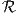

Midterm Exam, Fall 2016
Take Home Due: Beginning of class, Thursday, 3 November 2016.
This is to be all your own work. You may use any result from class, homeworks, or the books on reserve in the library. You may also use anything that is linked directly from the course webpage. I will have office hours on Mondays from 2-3pm, Tuesdays from 11am-1pm and Wednesdays from 11am-1pm. Do not consult anybody or anything else. The exam consists of five questions and is worth a total of 100 points.
where a,b ∈n, aT a = bT b = 1, a≠ ± b.
|
| (1) |
where u ≥ 0 is a scalar. Express the dual function in closed form (that is, solve the minimization problem in (1) for each value of u ≥ 0). Hence solve the dual problem
|
| (2) |
we have b ∈m and A ∈m×n. Let e denote the vector of ones. The problem can be expressed equivalently as the linear program
|
| (3) |
Is f(x) convex?
| John Mitchell |
| Amos Eaton 325 |
| x6915. |
| mitchj at rpi dot edu |
| Office hours: Monday 2–3pm, Tuesday 11am–1pm, Wednesday 11am–1pm. |